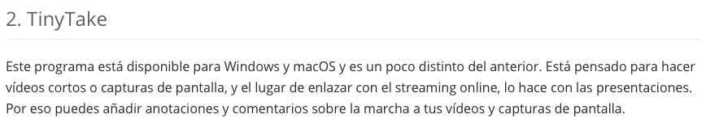
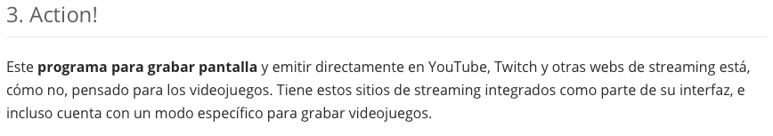

Captura la pantalla de tu ordenador
Existen decenas de programas gratis para grabar la pantalla de tu ordenador. La mayoría está disponible para Windows, pero muchos también lo están en macOS y Linux, así que hay variedad para elegir estés en el sistema operativo en el que estés. Algunos incluso permiten emitir directamente tu pantalla a sitios de streaming populares como YouTube o Twitch.

